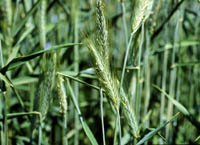

Rye is listed as one of the major cereal crops of the world. Rye is the only other major cereal capable of producing a leavened flour product. Rye bread is dark, heavy and a less prestigious food product than wheat bread and products.
Rye belongs to the grass family of
the genus Secale. The species cereale is the only form that is extensively cultivated. It is a relatively recent addition to the cereal grains. It was not found in any Egyptian ruins or Swiss lake dwellings, but was known by the Greeks and Romans. Rye may have been cultivated in northern Europe. Samples of "wild" rye (Secale montanum) have
been found in Neolithic sites of Austria and Poland. Cultivated rye may have been domesticated from the Mediterranean region (Secale
montanum) or may have originated from Secale anatolicum of southwestern Asia.
Rye is thought to have been brought to
North and South America by European settlers in the sixteenth and seventeenth centuries. During the nineteenth century it was introduced into South Africa and Australia. Today, it has the widest distribution of all the cereal crops.
What is so good about rye?
Of all the cereal crops, rye has the greatest tolerance to different climatic or soil conditions.
Compared with other winter cereals, rye is the most cold-tolerant cereal crop available. Rye is usually (80-90%) grown as a winter crop (planted in the fall as a cover crop to offer protection against spring wind erosion, as well as getting a head start on the spring planted crops and weeds). Since rye is usually planted in the
fall it is also harvested earlier (late July or early August). Fall growth has advantages for livestock operators as well, allowing late season grazing.
How is it used?
The greatest use (over 50%) of the rye grown in North America is animal feed. The protein in rye is greater in value than any other cereal grain, however, the rye is difficult to digest for animals, and the protein is therefore not readily available. Rye has anti-nutritional factors (beta-glucans and pentosans) which limit the amount able to be fed to livestock. The rye plant cross-pollinates, and so, is
susceptible to a mycotoxin (fungus-poison) called Ergot. Ergot
fungus can release a toxic compound which causes blood thinning, hemorrhaging and abortions in both animals and humans. Due to these problems, rye feed is blended with other grains to make a safe, cheap ration. The next largest use of rye is in the production
of alcohol for rye whisky (in order to be considered a rye whisky, over one-half of the original grain mash must be rye). Thirdly,
rye is used for human consumption in the form of bread, crackers, and cereals. Bread produced with rye is smaller, has a darker colour, and a more distinctive flavour than that produced by wheat. More rye is used for bread and other foods in Europe than in Canada.
How much do we produce?
In 1995, farmers seeded 93000 hecares
of the fall-seeded cereal for use in specialty foods, in the manufacture of Canadian liquor and as cattle feed.
|